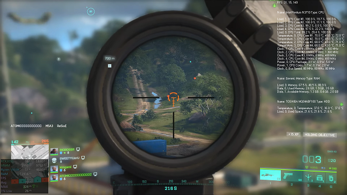
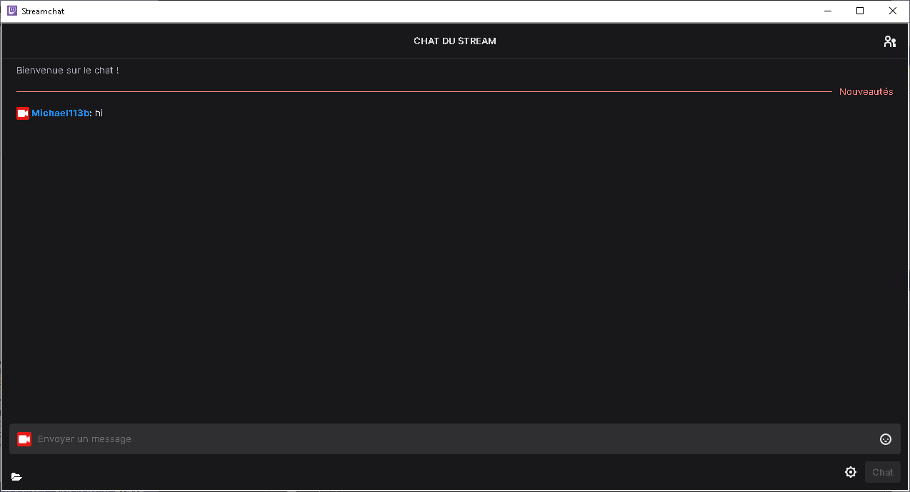
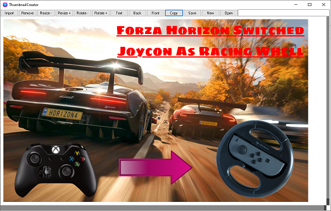
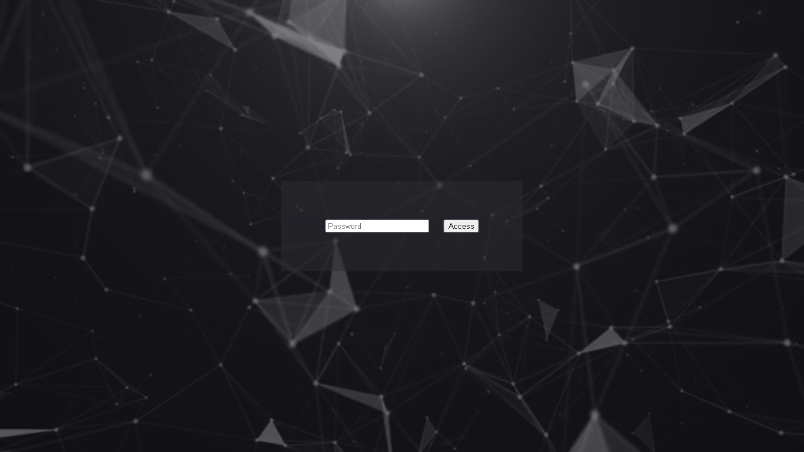

🛈
Michaël André Franiatte
Programing...
Motion Controllers
I love the way how Nintendo always create new games and gameplays. I was amazed by the Wii and spent all my money in games launched on this console. I only play for make a pause when I need it. But I discover a fashion in myself to understand how a HID (Human Interface Device) is running. I worked several years on every ways to use and create HID on PC and consoles. From Wiimote to Arduino, through keyboard and mouse, and gamepads, even unconventionnal HID, I'm able to program all HID, with always the same goal, enjoy the gameplay and be competitive at same time. I made different programs, from conventionnal interface to user script interface, as well as on PC than on Linux. I'm so curious about that, I even tested with network pass through. I also invented a way for users to sale their own scripts to other users.
Media Players
The media like audio, video, book, image, and map found on Youtube, online libraries, life and world, are kind of social media but without hate of people because it's made to resource yourself and it allow to find peaceful in you. I use the power of Youtube for create new players and get the fastest some media. In less than one year, I invented new ways to use media. Embeding Youtube video allow to make a social media to post free comments, to have a wall of favorite contents with images and videos, a wall with clips. I enjoy my wall of all media types with map localization and audio visualization. I made a special web browser to watch Youtube skipping ads. I learned to upload with better quality my own videos on Youtube, even show it by myself all better.
Chemical Masters
I created for the first time in the world all molecules with pressure and temperature controlled using Soave-Redlich-Kwong Equation of State. I solved it alone, in only three years, and never others would do it at my place. It was refused by scientific community. But it solve Origins of Life in hydrothermal systems, and lot of big questions in the Universe and the Earth system, like equilibrium between Ocean and Atmosphere. I still don't understand why I had a lot of things to continue but I didn't had the chance to. I didn't regret, I made a lot of other things in my life I'm presenting you here with this page. Maybe, I did even more. Who knows? Inventing derivation and resolution of all polynomial equations, resolution of differential equations, electrochemical potentials, and hydrogen coefficient diffusion, done also.

Game Blasters
As a gamer I made different tools to kill the game. I made a simple performance watcher with data on health of my PC when playing for be able to choose correctly game settings for better optimization and better graphisms with performance of my PC for each game I want to play. I made anti-cheat programs totally legit but I also made less legit programs, for flooding memory. I made tutorials to secure and optimize my PC, I can say that go together. In few days, I made a little unpretentious game launcher like a wall of my games to launch it, and watch through each game I own. I also use several days, not months, to create a full PC remote play with keyboard and mouse and controllers enable, which can be used on pocket PC for better gaming experience streaming a desktop PC.

Content Recorders
Content creators are very strong to use fantastic but complicate tools for streaming on Twitch or Youtube and create videos they upload on Youtube. The communities around them are also fantastic, and it's complicate for a content creator to build a community. I'm always in admiration for it, not really every contents. But sometimes, everything is fantastic. I created simple programs for simple people to create videos to stream or to upload. It stream or record webcam, desktop and games, but easy and very optimized. I love optimizing my programs and make very simple interface, because I know programing, and it's somewhere my job. I just don't want to have to use a program, I don't know if it destroy or not my cheaper PC. I'm not a content creator, nor a theater man. I only build some programs, I need to use.

Content Editors
As each one, I use tool I found on the internet, or ready to use coming with the OS of my PC. But sometimes, I don't find really what I want. So I love programing, and it goes, for the best like the worst. I made a program for create my thumbnails and image assembler, a program for convert image format to icon format with transparency to use in my programs I create, also a program for PDF generation to create books in HTML, which can also check if a content in HTML page is correctly able to be exported, and also two programs to edit text and write code simply, but with it I learned to create a tool for scripting with autocompletion. Like with all the rest I want to say. This is normal, I'm not lazy, nor fool, I'm honnest, and I'm able to work in every directions. That's why I finish what I start, and fast.

Secure Mappers
I wasn't always listening people because sometimes it wasn't people I want to listen. But when someone have good ideas and good practice to learn, I reminded me everything. That's why the important to do, I just did it. A database, a file, a program, a memory shall be secure and optimized. Crypting, hashing, encoding, for secure and private access and data, are important. The values in the worlds are build on values. It vary for people mind. For me, and you, I was able to secure access to every pages, even without a database behind. With a token or a password, we were the only to have access to our own contents, or the contents we wanted to share with he or she. I also did a very simple web framework, and more flexible than web frameworks everybody are using, allowing to call back-end and front-end in both ways.

Custom Programs
I tried to sale my programs. It was existing and running for me. I was alone to create, test and use it. Among these programs, I made, I was able to create for you custom programs on your demands. You just had to ask me, pay me, and I delivered it to you. It was just simple as that. I enjoyed programing, and making hard things with simplicity and all my experiences. I've done everything I wanted to do, whether people unliked it. I just needed to work, have a job, or use my free times to create. It was simple as contacting me. But nobody wanted, it's not important, they saw nothing, and remembered nothing, I just did it, and nobody wanted it. I never searched to fight someone and put the others in my pocket, or to destroy something. I was loving to work with goals, and with respect of everyone and everything. Great things, make great people. I didn't worked for being stolen, or insulted, or jailed, or ignored, or scamed. I worked for myself and wanted to win my life if people was showing interests in my works. Unfortunately, dead now, my dreams gave up, but I hope my works survive, because it's of interest for me, and it's what my ancestors wanted to find when they started the works. All the works, I owe it to these ancestors, my parents especially and me, definitively not to anyone else. I teached a lot of true things, despite people I met wasn't encouraging or congratulating me and my works, more the contrary.